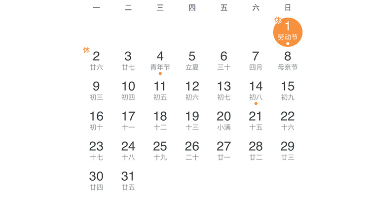

五一国际劳动节
说到五一劳动节，虽然带着“劳动”两个字，但是却弥漫着一种放假的慵懒气息。从以前的“五一七天乐”到现在的“五一小长假”，大概以前过习惯七天假期的人心中会暗暗伤痛吧~
【长假缩成小长假】
1999年9月18日，中国国务院发布《国务院关于修改〈全国年节及纪念日放假办法〉的决定》，第一次修订了1949年12月23日中国政务院发布的《全国年节及纪念日放假办法》，将每年春节、“五一”和国庆节法定节日加上调休，全国放假7天，形成了3个“黄金周”。黄金周就可以全国各地甚至是跑到海外去玩呢！

2007年12月14日，中国国务院第二次修订《全国年节及纪念日放假办法》，将春节的放假起始时间由农历年正月初一调整为除夕；“五一”由7天调整为3天，减少4天；清明、端午、中秋增设为法定节假日，各放假3天。五一黄金周也将成为历史。2008年起，五一黄金周变为五一3天小长假。
【五一假期的由来】
在美国，工人们每天要劳动14至16个小时，有的甚至长达18个小时，但工资却很低。马萨诸塞州一个鞋厂的监工曾经说过这样的话：“让一个身强力壮体格健全的18岁小伙子，在这里的任何一架机器旁边工作，我能够使他在22岁时头发变成灰白。”沉重的阶级压迫激起了无产者巨大的愤怒。他们知道，要争取生存的条件，就只有团结起来，通过罢工运动与资本家作斗争。工人们提出的罢工条件，就是要求实行八小时工作制。
在美国，工人们每天要劳动14至16个小时，有的甚至长达18个小时，但工资却很低。马萨诸塞州一个鞋厂的监工曾经说过这样的话：“让一个身强力壮体格健全的18岁小伙子，在这里的任何一架机器旁边工作，我能够使他在22岁时头发变成灰白。”沉重的阶级压迫激起了无产者巨大的愤怒。他们知道，要争取生存的条件，就只有团结起来，通过罢工运动与资本家作斗争。工人们提出的罢工条件，就是要求实行八小时工作制。
1、五一虽然只有三天假，但是也要好好放松一下自己；
2、趁着正好赶上春末夏初，抓紧大好时光去游玩吧~